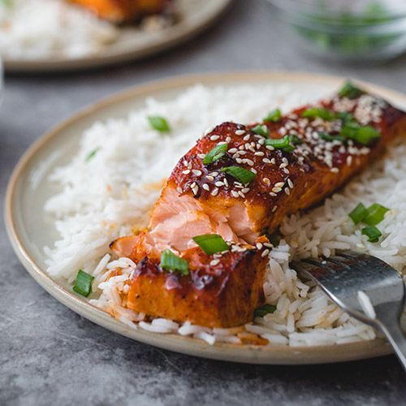

Salmon Bulgogi

Description
I absolutely love salmon! Here's my favorite way to cook this omega-3 rich
fish. I marinate it with a sweet and savory bulgogi marinade, hence the
name - salmon bulgogi. The flavorful marinade works wonderfully with the
rich, oily fish.
Bulgogi is a marinated meat dish made with thin slices of beef. However, the
sweet and savory marinade works well with any meat or seafood. In the past,
I posted a variation made with chicken, dak bulgogi. It's one of the most
popular recipes on my blog.
The marinade is easy to whip up, and the fish cooks very quickly, making this
dish a perfect weeknight meal or a quick addition to your summer grilling!
Ingredients
Dish
- 1 pound salmon fillet, preferably with skin
- 3 scallions, cut into 2-inch pieces
- 1 small onion, thinly sliced
- 2 cups white rice
Marinade
- 3 tablespoons soy sauce
- 1 tablespoon lemon juice
- 2 tablespoons sugar ( or you can use 1 T sugar 1 T honey)
- 1 tablespoons rice wine or mirin
- 2 teaspoons roughly minced garlic
- 1 tablespoons sesame oil
- 1 teaspoon grated ginger
- 1/8 teaspoon pepper
Steps
- Pull the bones from the salmon if there are any. Cut the salmon fillet into about 3/4 to 1-inch thick pieces.
- In a medium size bowl, mix the marinade ingredients until the sugar and honey have dissolved. Coat the salmon pieces with the marinade. Marinate for 20 to 30 minutes (longer if you have time).
-
- Broiling: Set the oven rack 6 inches below the heating element. Preheat the broiler. Place the salmon in a broiling pan lined with parchment paper or aluminum foil. Broil about 3 to 4 minutes until the salmon is cooked and slightly charred. Watch closely so as not to overcook.
- Baking: Preheat the oven to 450°F. Place the salmon in a baking pan lined with parchment paper or aluminum foil. Bake for 4 to 5 minutes.
- Pan-frying: In a preheated, lightly oiled non-stick skillet, cook for a minute or two on each side.